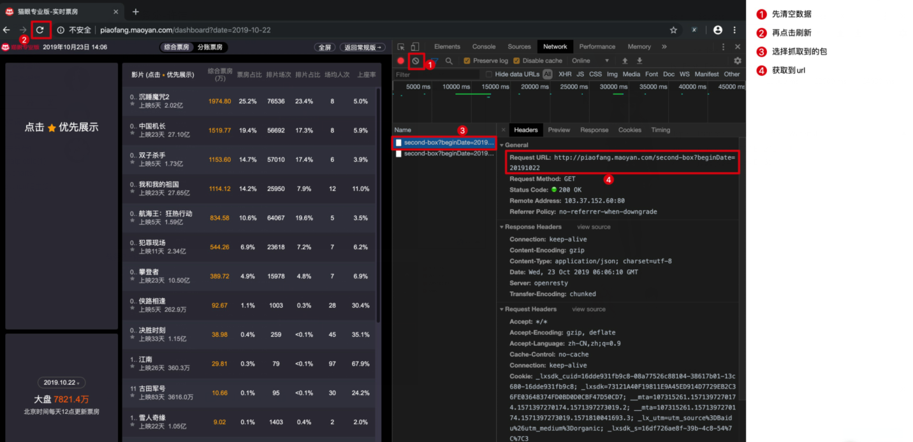
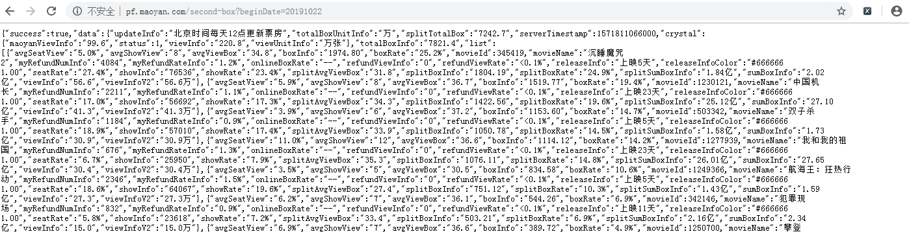

本文是爬虫及可视化的练习项目，目标是爬取猫眼票房的全部数据并做可视化分析。
我们先打开猫眼票房http://piaofang.maoyan.com/dashboard?date=2019-10-22 ，查看当日票房信息，
但是在通过xpath对该url进行解析时发现获取不到数据。
于是按F12打开Chrome DevTool，按照如下步骤抓包

再打开获取到的url:http://pf.maoyan.com/second-box?beginDate=20191022

可以看到是json数据，并且url是以日期结尾的，也就是每日的票房数据都保存在对应日期的url中，这样我们就可以通过构造url来爬取每天的票房数据。
先创建了两个函数，
一个用来获取制定年份的所有日期，例如，传入2019，返回['20190101', '20190102'...'20191230', '20191231']。
当然也可以传入多个年份的列表，如[2016,2017,2018']，返回 ['20160101','20160102', ...'20170101',...'20180101',...'20181231']
这里没有使用任何库，用笨方法手动构造了全年的日期列表。
def get_calendar(years):
"""
传入年份(可用list传入多个年份)，得到年份中的所有日期
:param years: 可传入list、int、str
:return: 年份中全部日期的list，日期格式: "2019-09-30"
"""
mmdd = []
# 判断传入参数的格式，如果是list则排序，如果是str或int则转为list
if isinstance(years, list):
years.sort()
else:
years = [int(years)]
# 先为每个月都加入31天，然后删掉2，4，6，9，11的31日和2月的30日，再判断闰年来删掉2月29日
for year in years:
for m in range(1, 13):
for d in range(1, 32):
mmdd.append(str(year) + str(m).zfill(2) + str(d).zfill(2))
for i in [2, 4, 6, 9, 11]:
mmdd.remove(str(year) + str(i).zfill(2) + "31")
mmdd.remove(str(year) + "0230")
if not calendar.isleap(year):
mmdd.remove(str(year) + "0229")
return mmdd第二个函数很简单，传入上一个函数得到的日期列表，返回对应日期的url列表。
def get_urls(datas):
"""
通过日历函数得到的每年全部日期，构造出全部日期的url
:param datas: 全部日期
:return: 全部url
"""
urls = []
for date in datas:
url = "http://pf.maoyan.com/second-box?beginDate={}".format(date)
urls.append(url)
return urls
对于将数据存到mysql还是excel中，差别只在于写入的方法不同，前面对url的解析以及对数据的处理和获取都基本相同，
所以这里直接把存入mysql和存入excel写到了一个函数中，和后面的两个函数分别配合完成数据储存操作。
参数说明和判断储存方式在函数注释里写的很详细，这里简单说一下函数逻辑，
因json里的数据项很多，并且都以英文作为key，所有我们这里先手动创建要获取的数据项的中英文对照表，放到dict中，并根据这个dict来匹配主要的数据项。
最终返回一个由字典组成的list，返回的list其实没什么用，因为后面可视化的数据来源是直接通过sql取自mysql的，所以返回的list主要是调试时用着方便。
def get_movie_data(url, excel_or_db):
"""
采集一个页面，并将数据写入excel或数据库，
需要在函数外创建excel工作薄和工作表或连接好数据库，将worksheet或Connection类作为参数传入本函数
如果传入的是worksheet类，函数会把数据保存到已创建excel中；
如果传入的是Connection类，函数会把数据保存在已连接的数据库的movies_data表中，数据库表名手动在sql中调整，本函数内1处、get_data_save_db()函数内两处。
:param url: 要采集的页面
:param excel_or_db: openxl的worksheet类 或 pymysql的Connection类
:return: 返回页面的全部数据
"""
headers = {'user-agent': 'Mozilla/5.0 (Windows NT 10.0; Win64; x64) AppleWebKit'
'/537.36 (KHTML, like Gecko) Chrome/67.0.3396.62 Safari/537.36'}
main_key = {"avgSeatView": "上座率",
"avgShowView": "场均人次",
"boxInfo": "综合票房",
"boxRate": "票房占比",
"movieId": "影片ID",
"movieName": "影片名称",
"releaseInfo": "上映天数",
"showInfo": "当日排片场次",
"showRate": "排片占比",
"sumBoxInfo": "综合票房总收入"} # 用于数据分析的主要属性
html = requests.get(url, headers=headers).text # 获取页面信息，得到json对象
result = json.loads(html, encoding="utf-8") # 将json对象转为python对象
main_data = []
try:
page_data = result["data"]["list"] # 获取其中可用的数据部分，得到 [{电影1数据}, {电影2数据}, ...]
if isinstance(excel_or_db, openpyxl.worksheet.worksheet.Worksheet):
for dt in page_data: # 对页面数据进行循环，匹配main_key中的主要属性，将数据放到main_data中，
one_movie_data = {"日期": url[-8:]} # 先把日期放入字典中
for key in main_key.keys():
one_movie_data[main_key[key]] = dt[key] # 将原数据的英文属性名，对照main_key转成中文
excel_or_db.append(list(one_movie_data.values()))
main_data.append(one_movie_data)
elif isinstance(excel_or_db, pymysql.connections.Connection):
for dt in page_data: # 对页面数据进行循环，匹配main_key中的主要属性，将数据放到main_data中，
one_movie_data = {"日期": url[-8:]} # 先把日期放入字典中
for key in main_key.keys():
one_movie_data[main_key[key]] = dt[key] # 将原数据的英文属性名，对照main_key转成中文
cursor = excel_or_db.cursor()
sql_insert = '''insert into movies_data15 values(%s, %s, %s, %s, %s, %s, %s, %s, %s, %s, %s);'''
cursor.execute(sql_insert, list(one_movie_data.values()))
excel_or_db.commit()
cursor.close()
main_data.append(one_movie_data)
except:
pass
return main_data因为目标网站数据量较大，为了测试方便，这里写了个函数来限制采集数量：达到设定值则结束采集。
def go_limit(year, *, ws, max_line=float("inf")): # float("inf")为无穷大
"""
测试时用于限制爬取条数
:return:
"""
num = 1
for url in get_urls(get_calendar(year)):
if num <= max_line:
print(num, get_movie_data(url, ws))
time.sleep(1)
num += 1
else:
break下面是写入excel和写入mysql的函数，写成函数主要是为了看着简洁。
def get_data_and_save_excel():
tittles = ['日期', '上座率', '场均人次', '综合票房', '票房占比', '影片ID', '影片名称', '上映天数', '当日排片场次', '排片占比', '综合票房总收入']
workbook = openpyxl.Workbook() # 创建工作簿
worsheet = workbook.active # 获取活跃工作表，即当前默认工作表
worsheet.append(tittles)
print(go_limit(2011, ws=worsheet, max_line=20)) # 限制输出行数，用于测试
# 配置列宽
for index in range(1, len(tittles) + 1): # 将所有列列宽均设为20
worsheet.column_dimensions[get_column_letter(index)].width = 20
workbook.save("data.xlsx")连接数据库，开始采集，写入数据库
这个函数里有一个逻辑错误，能找到问题的小伙伴可以在留言里指出。
还有就是sql里边包含表名称，本函数、get_movie_data()采集函数、以及后面的可视化函数，都用到相同的表名称，如有变动要分别修改，很麻烦，
如果把表名称作为参数传递也很麻烦，每个函数都要传一次，
可以把表名称作为全局变量，用外部耦合解决，用增加耦合度来换省事。
def get_data_save_db(years):
"""
数据库表名需要手动在sql中调整，本函数内2处，get_movie_data()函数内1处，3处表名需要保持一致。
"""
config = {'host': 'localhost',
'port': 3306,
'user': '***',
'password': '***',
'database': '***',
'charset': 'utf8'}
conn = pymysql.connect(**config) # **config是将config字典拆开传入
cursor = conn.cursor()
sql_check = '''drop table if exists movies_data15;''' # 判断movies_data表是否存在，存在则drop
sql_create = '''create table movies_data15(date varchar(8),
avgSeatView varchar(8),
avgShowView varchar(8),
boxInfo varchar(10),
boxRate varchar(8),
movieId varchar(10),
movieName varchar(30),
releaseInfo varchar(8),
showInfo varchar(8),
showRate varchar(8),
sumBoxInfo varchar(8),
primary key (date, movieID)) DEFAULT CHARSET=utf8;''' # 创建movies_data表
cursor.execute(sql_check)
cursor.execute(sql_create)
conn.commit()
cursor.close()
print(go_limit(years, ws=conn))
# print(get_movie_data('http://pf.maoyan.com/second-box?beginDate=20110403', conn))
conn.close()
get_data_save_db([i for i in range(2011,2020)]) # 采集2011年至今的所有数据至此电影票房的数据采集工作已完成，接下来要进行数据可视化，
请看《【python数据分析实战】电影票房数据分析(二)数据可视化》